Индустрия
SpaceX обогнала Amazon по капитализации и покупает ИИ-стартап Cursor за $60 млрд
SpaceX дороже Amazon — и покупает ИИ-стартап Cursor за $60 млрд. Как это возможно?
TechCrunch AI
16 июн. 2026 г.Материалы из источника TechCrunch AI.
104 материалов
SpaceX дороже Amazon — и покупает ИИ-стартап Cursor за $60 млрд. Как это возможно?
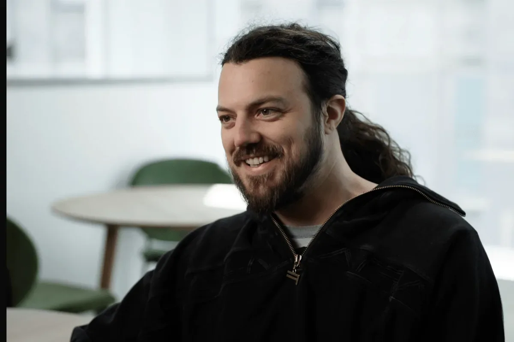
Стартап Probably получил $9 млн на создание «экзоскелета» для LLM, который предотвращает галлюцинации и ошибки.
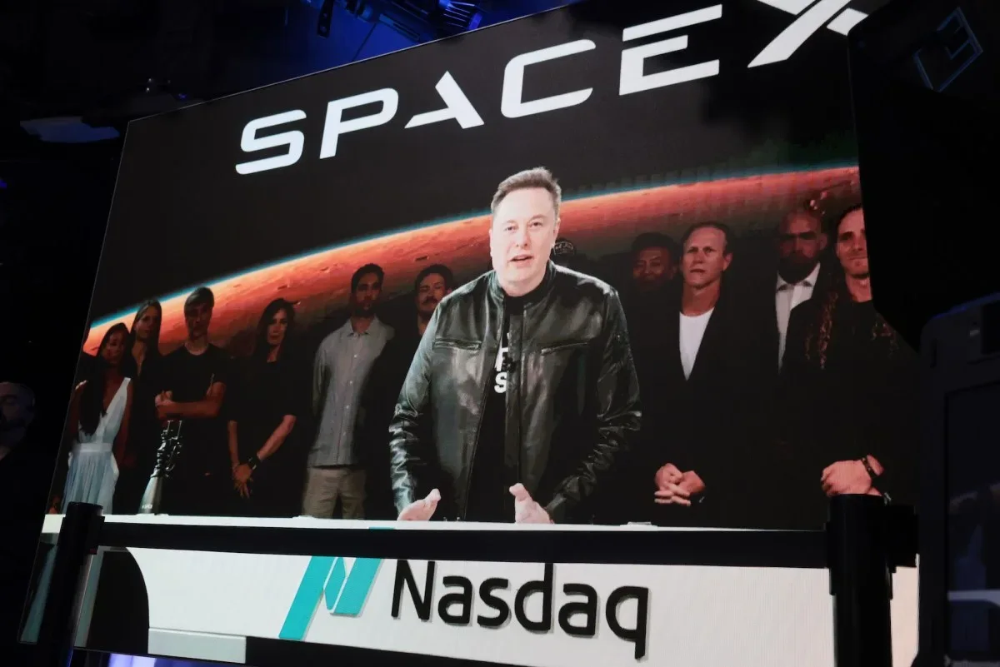
SpaceX покупает Cursor за $60 млрд акциями — детали сделки с ИИ-стартапом
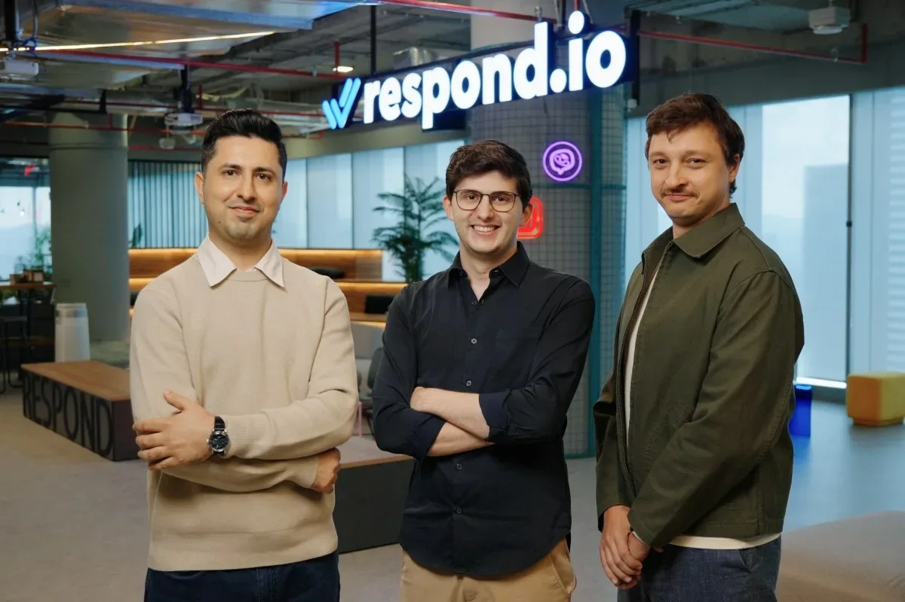
Малайзийский стартап привлёк $62,5 млн на развитие ИИ-агентов для обработки сообщений клиентов
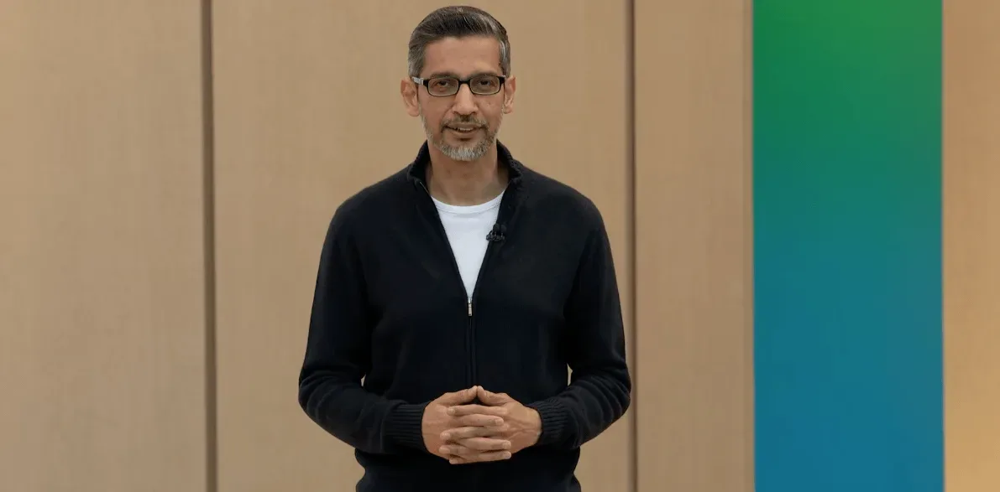
Студенты Стэнфорда освистали Сундара Пичаи из‑за контрактов Google с Минобороны Израиля и ICE.
Белый дом отключил модели Anthropic одним письмом — без суда и без объяснений. Что это значит для ИИ-отрасли
Meta запускает ИИ Mode в Facebook: поиск по публичным постам и новые ИИ-инструменты

SpaceX провела крупнейшее IPO в истории: $75 млрд, акции +19% в первый день и 4400 новых миллионеров
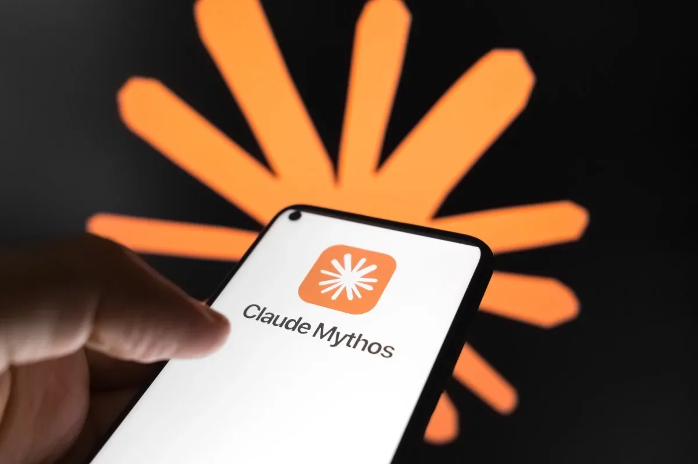
76 экспертов требуют снять запрет на модели ИИ Anthropic: это ослабляет кибербезопасность
Salesforce платит $3,6 млрд за Fin — бывший Intercom, который научил ИИ отвечать клиентам
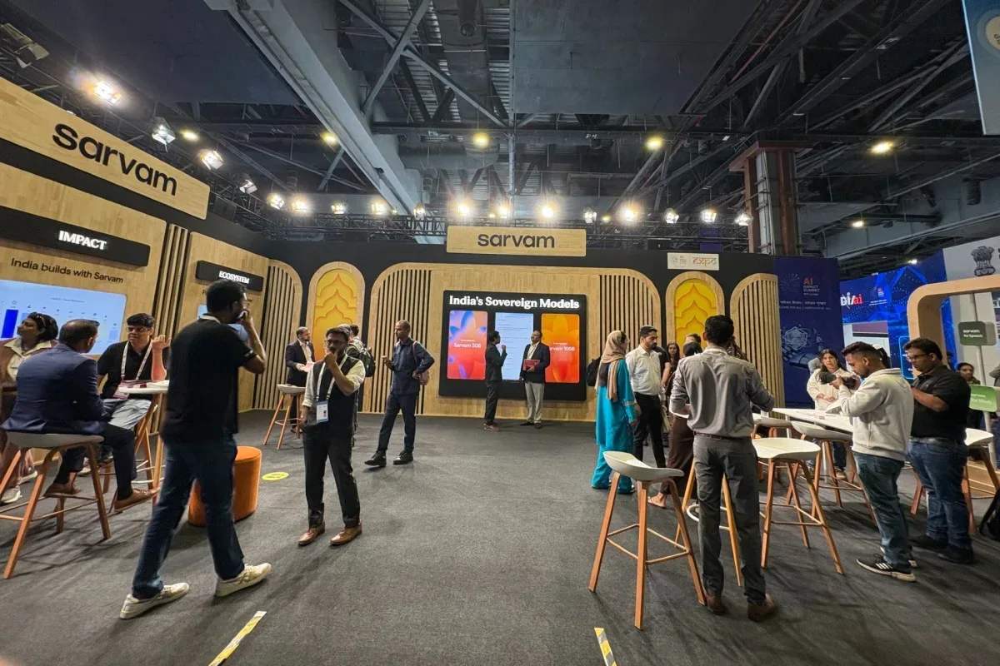
Индийский стартап Sarvam привлек $234 млн, став новым единорогом. Средства пойдут на разработку моделей для индийских языков и масштабирование.
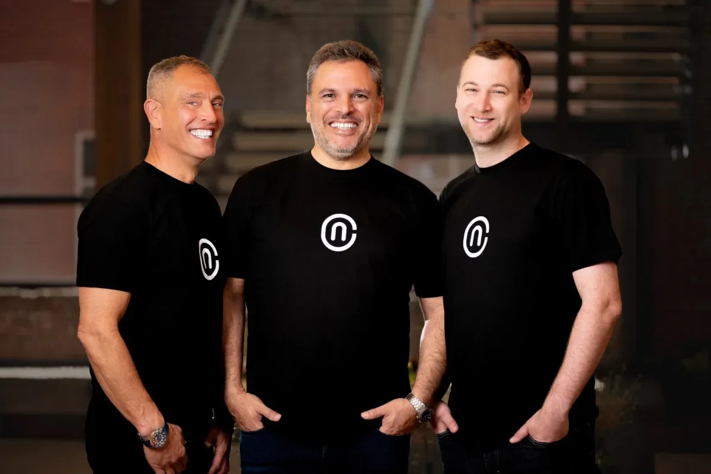
Стартап NewCore вышел из стелс-режима с $66 млн для управления ИИ-агентами как сотрудниками.
Спутник YAM-9 впервые использовал ИИ-модель для самостоятельного поиска объектов на орбите — как это изменит работу космических сенсоров?
Рекордные прибыли и массовые увольнения: ИИ как оправдание и реальность расслоения
Крупнейшее IPO и гонка ИИ-компаний за публичные деньги.
Anthropic по указу США отключила индийцам доступ к новым ИИ-моделям. В Индии заговорили о необходимости собственного ИИ.
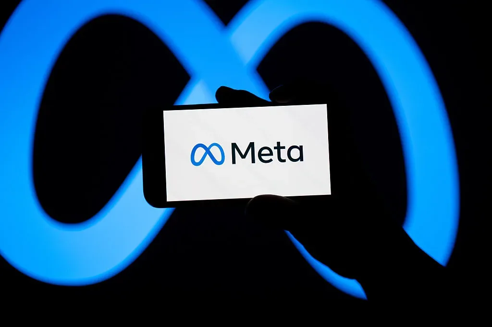
Пекин заблокировал сделку Meta с Manus на $2 млрд — что происходит с китайским ИИ-стартапом
KPMG удалила отчёт об ИИ из-за галлюцинаций — организации опровергли данные.
Amazon CEO вызвал экспортные ограничения на модели Anthropic после доклада о киберрисках.
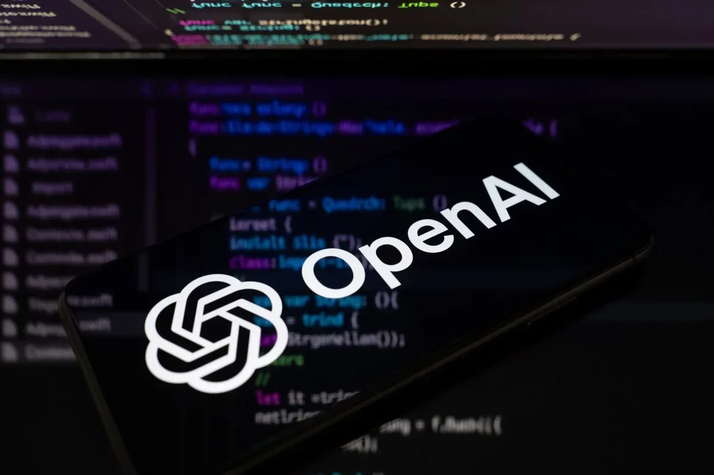
Генпрокурор Нью-Йорка направил OpenAI повестку — компанию проверяют по широкому кругу вопросов.
Эндрю Янг запустил Noble Mobile, возвращающий деньги за неиспользованные гигабайты
США отключили самые мощные модели Anthropic — и компания открыто не согласна с этим решением
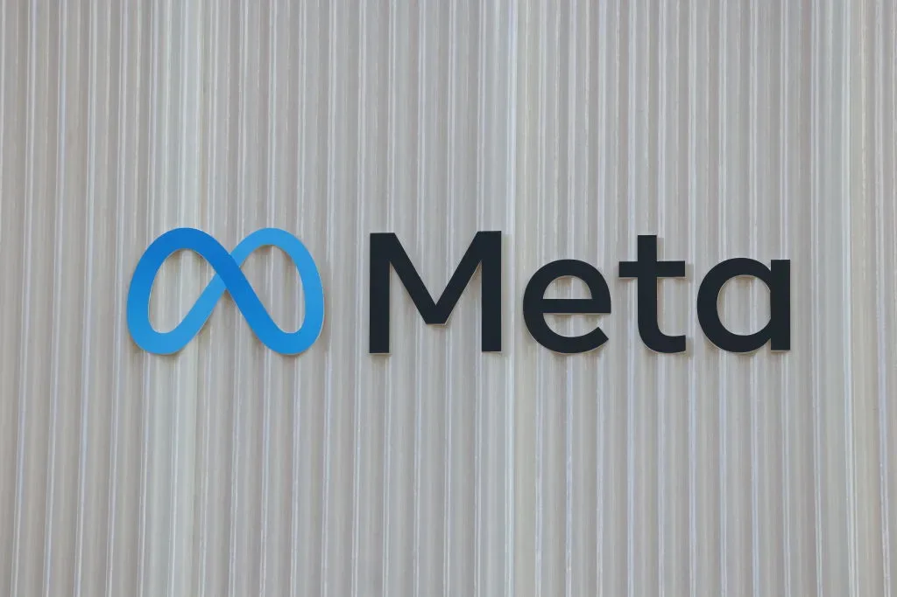
6500 инженеров Meta принудительно разметают данные для ИИ — и называют это ГУЛАГом
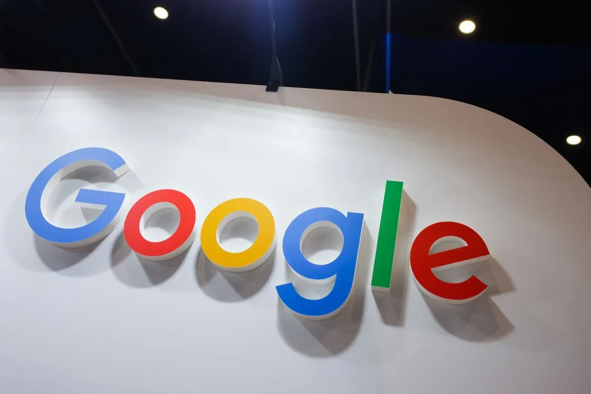
Google подал иск против китайской кибергруппы Outsider Enterprise за масштабное мошенничество с использованием ИИ.

SpaceX разместилась на Nasdaq: $75 млрд, акции +19% в первый день и первый триллионер в истории
Mistral ИИ может привлечь €3 млрд при оценке €20 млрд — вдвое больше, чем в прошлом раунде.

Google судится с китайской группировкой, использующей ИИ для рассылки фишинговых SMS и создания поддельных сайтов.
SpaceX, Anthropic и OpenAI нацелились на биржу — дёт рынок?

MANGOS: новый акроним ИИ-лидеров, половина готовит IPO.

SpaceX провела IPO на $75 млрд — крупнейшее в истории; Маск получает контроль, а ИИ-дивизион xAI зарабатывает на аренде вычислений.